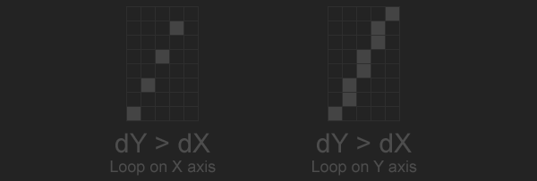

Slope Intercept
The easiest way to draw a line is to loop trough each pixel of the line on the x axis, and use the slope intercept form of the line to find y. The y-intercept form of the line equation let's us find y as a function of x, it is \(y = mx + b\). Where \(x\) and \(y\) are points on the line, \(m\) is the slope and \(b\) is the y-intercept (where the line crosses the y axis).
The slope of the line is rise over run, or the change in the line's y direction relative to it's x direction. To find the slope of a line, divide the change in it's y component by the change in it's x component: \(m = \frac{ \Delta Y }{ \Delta X} = \frac{y1 - y0}{x1 - x0} \) or float m = float(y1 - y0) / float(x1 - x0). The slope of a vertical line is underfined, it could lead to a divide by 0 error.
We know the slope of the line, next let's find the y intercept \(b\) by by re-arranging the equation from \(y = mx + b\) to \(b = y - mx\). We already know the value of \(m\), and we can use either the start or end point for \(x\) and \(y\). Now that we know all of the variables, plot a line by looping trough all of the x pixels and finding the y pixel for each.
void Line(Image& image, int x0, int y0, int x1, int y1, Color& val) {
float m = (x0 == x1) ? 0.0f : (float(y1 - y0) / float(x1 - x0));
float b = float(y0) - m * float(x0);
for (int x = x0; x <= x1; ++x) {
float y = m * float(x) + b;
PutPixel(image, x, int(y + 0.5f), val);
}
}
It's a good first attempt, but this method can only draw lines correctly in octants 0 and 7. Drawing the test image using the above code looks like this:
The loop along the x axis only ever increments, which can't handle the case where x1 < x0. This is why the above image is missing its left half. To fix the loop, swap the start and end points if x1 is less than x0.
if (x0 > x1) {
swap(x0, x1);
swap(y0, y1);
}
for (int x = x0; x <= x1; ++x) {
float y = m * float(x) + b;
PutPixel(image, x, int(y + 0.5f), val);
}
I prefer to re-factor the above code to avoid having to swap the start and end points. Instead of always adding 1 to x0 in the loop, store a direction variable and add that on each iteration. The loop condition needs to change as well, less than will no longer work. We can check if x == x1, but the previous loop was inclusive so we should check x == x1 + xStep. This is the refactored loop:
int xStep = x0 < x1 ? 1 : -1;
for (int x = x0; x != x1 + xStep; x += xStep) {
float y = m * float(x) + b;
PutPixel(image, x, int(y + 0.5f), val);
}
Major & Minor Axis
Even with the above changes, the test image we are trying to draw is incorrect.
The line is not drawing correctly when the change in the lines y direction is greater than the change in the lines x direction. If \(|\Delta Y| > |\Delta X|\) and we loop on the x axis, multiple pixels might need to be plotted on the y axis. This leads to holes in the line, as shown below.
To fix this, we need to define the primary axis of the line. The primary axis is going to be the axis with the most change, the largest absolute delta value. If the primary axis is the X axis, draw the line like before. If the primary axis is the y axis, loop from y0 to y1. To find the value of x, re-arrange the equation \(y = mx + b\) to \(x = \frac{y - b}{m}\). Take care to avoid the invalid division of vertical lines which don't have a slope.
void Line(Image& image, int x0, int y0, int x1, int y1, Color& val) {
float m = (x0 == x1) ? 0.0f : (float(y1 - y0) / float(x1 - x0));
float b = float(y0) - m * float(x0);
int xStep = x0 < x1 ? 1 : -1;
int yStep = y0 < y1 ? 1 : -1;
if (abs(x1 - x0) > abs(y1 - y0)) {
for (int x = x0; x != x1 + xStep; x += xStep) {
float y = m * float(x) + b;
PutPixel(image, x, int(y + 0.5f), val);
}
}
else {
for (int y = y0; y != y1 + yStep; y += yStep) {
float x = (x0 == x1) ? float(x0) : ((float(y) - b) / m);
PutPixel(image, int(x + 0.5f), y, val);
}
}
}